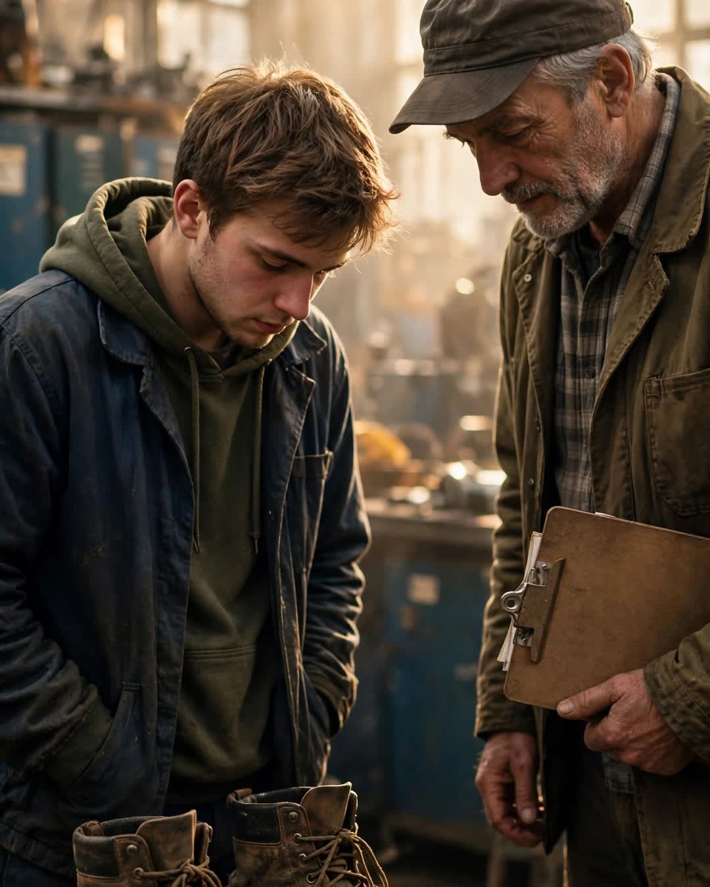

The Work Boots
A Clipp Kaili original story

The boots were too big for me by half a size, and I wore them anyway.
They were my father's — twenty years of mill work in the leather, the toes scuffed down to the steel, laces replaced so many times they weren't the same color. When he retired, he set them by the back door like a dog that still waited for him, and when I got hired at the same mill that spring, he picked them up and put them in my hands without a speech.
"Broke in," was all he said. "That part's done for you."
My first morning, I walked in wearing a dead man's boots — that's what it felt like. A rookie's boots. I was twenty, scared in the specific way you get scared when a job can take a finger, and I kept my eyes on those scuffed toes like they knew the floor better than I did.
The foreman stopped me at the time clock.
He was sixty if he was a day, with a clipboard and the kind of face that had supervised three decades of men who all thought they were tougher than the machines. He didn't look at my face. He looked down.
"Where'd you get those boots, kid?"
Heat went up my neck. "They're my dad's."
"Your dad." He turned a boot's worth of memory over in his mind. "Ray — Ray Delaney? Second shift, line three?"
"Yes, sir."
He nodded slowly, and something in the man's face rearranged itself — the way a room does when someone respected walks into it.
"Your father pulled a man's sleeve out of a jammed roller in '09 before the guard even tripped," he said. "Didn't wait. Didn't make a speech about it after, either. Cost him a Saturday at the clinic getting his own hand stitched." He looked at the boots again. "He was wearing those."
I stood there in my father's boots, and I understood that I had not walked into that mill alone. I had walked in on twenty years of a reputation I hadn't earned, being offered to me like a loan.
"See that you fill them," the foreman said, and walked off, and that was the whole blessing.
I worked that first year like a man paying interest. Early. Careful. Never the guy who cut the corner. Not because I loved the mill — because every man on that floor had a story about my father, and they told them to me one by one, at lunch, on breaks, like chapters. I learned more about Ray Delaney in his boots than I ever learned across his kitchen table. He had not been a talker. He'd been a presence. The boots just knew where he'd stood.
He's gone three years now. The boots sit by my back door these days, retired twice over, and my own son starts his apprenticeship in June.
They'll be too big for him by half a size.
He'll wear them anyway. That's how a family walks into a room — one pair of feet at a time, on ground somebody else already broke in.
This story is a work of fiction, written to touch hearts and bring families closer.
← Back to all stories